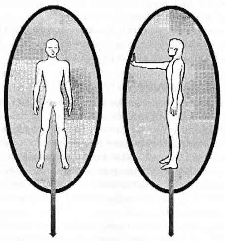
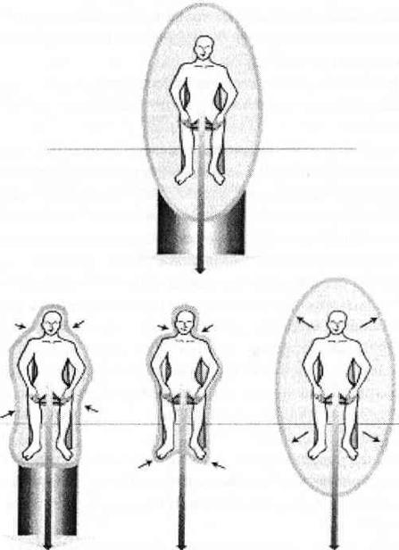

AURAYI TANIMLAMAK
Uygun sınırları belirlemek, bütün psikolojik yöntemlerin ana kuralı ve bütün ilişkilerin temel hoşnutluk ya da tartışma noktasıdır. Ama sınır koymanın, kesinliği olan, bilimsel ve her durumda geçerli bir yöntemi henüz bulunamamıştır.
Makul sınırlar konmadığında kimsenin yaşamının uyumlu bir akışı olmaz. Böyle bir durumda, insanın iç dünyası karşılanmamış ihtiyaçlar ve gerçekleşmemiş hayaller yığınıyla karmakarışıktır; dış dünyası ise ya aşırı derecede işle ya da umutsuzca bir toplumsal baskıyla sarılıdır. Sınırlarının nerede başlayıp nerede bittiğini asla bilemediği için bu insanlar arkadaşlarının duygusal sorunlarından çevre meselelerine kadar her şeyi kişisel olarak algılar; bunları kendi sorumlulukları sanıp üstlenirler. Kendilerini, başkalarını ne kadar etkilediklerine göre tanımlarlar; kendi hayatlarına ne kadar etki ettiklerine göre değil.
Sınırları olmayan kişiler kendilerine sınır oluşturmak için çoğu zaman ağırlıklarını kullanırlar: Kilo aldıkça daha fazla yer kaplar ve kendilerini bu şekilde korurlar ya da kilo kaybettikçe özdenetimleri olduğunu ispatlar ve hiçliğin içinde görünmez olurlar. Böyle insanlar kontrolü ellerinde tutmak ve sınırlar koymak için kimi zaman da fiziksel güvenlik ya da düzeni kullanırlar. Bu sahte sınırların hiçbiri işe yaramaz.
Sınırları olmayan kişiler genellikle sağlık konularında, çevre meselelerinde, politikada, iş ya da finans dünyasında aşırı faal bir şekilde rol alırlar. Bunlar kötü faaliyetler değildir ve onlarada bir zarar vermez. Yine de bu harici faaliyetlere aşırı odaklanma hiperaktif ve sınır-özürlü insanların tanımlanmasını kolaylaştırır. Ben onlara kaçak şifacılar diyorum.
Kaçak şifacılar sıradan şifacılardan önemli farklılıklar gösterirler. Onlar yaptıkları işlerde olağanüstü başarılıdırlar ama iç dünyalarına baktığınızda büyük bir boşluk ve kaos görürsünüz. İçlerindeki tüm enerji, iyileştirdikleri kişilere ve olaylara akıp gider; kendilerine ayıracak zamanları yoktur.
Kaçak şifacıları tanımlamanın en iyi yolu, onlara kendileri için ne yaptıklarını sormaktır; dinlenmek ya da kendilerini iyi hissetmek için ne yaptıklarını sormaktır. Sıradan şifacılar böyle bir soruyla karşılaşınca hiç duraksamadan koca bir liste dökerler. Kaçak şifacılarınsa ya dilleri tutulur ya da içinde bencillik olmayan misyonlarını anlatmaya başlarlar.
Bencillik olmadığı doğrudur. Onlar acılarından “kendilerinden arınarak”; kendi hayatlarının önemsiz bir parçası haline gelerek kurtulmaya çalışırlar. Sürekli başkaları için yaşayarak ve kendilerini ihmal ederek iç dünyalarındaki karmaşadan kurtulmaya çalışırlar. Bu yolda hastalanabilir hatta ölebilirler. Başkalarına şifa verirken ya da toplumsal bir haksızlığa karşı çıkarken iyileştirici enerjilerini yönlendirirler ama sınırları olmadığı ya da sınır nedir anlamadıkları için (büyük bir olasılıkla fiziksel ya da ruhsal bir hastalığa yelken açmışken) enerjileri karşı tarafa zararlı da olabilir.
Kaçak şifacılar başka insanların acı içinde olmasına dayanamazlar. O kişilerin rahatsızlıklarına bağlı öğrenebilecekleri dersler olduğunu tamamen göz ardı ederek onları kurtarmaya girişirler. Kaçak şifacıların niyetleri iyidir ama sonuçta çözülemez bağımlılıklar yaratırlar çünkü iyileştirmek zorunda ve arzusunda oldukları için olayları akışına bırakamazlar. Sürekli yeni misyonlar yaratmak, yeni adaletsizlikler bulup üstüne gitmek ihtiyacındadırlar. Genellikle de işe sizin hayatınızdan ve çektiğiniz sıkıntılardan başlarlar.
Kaçak şifacılığın ardında yatan temel itki dünyayı acıdan kurtarmak gibi görünse de aslında bunu gerçekleştirmeye çalışanlar kendi acılarının hatırasından kurtulmaya çalışmaktadırlar.
Bu yüzden kaçak şifacılık, şifacının benlik imajının şifa verme becerisine sımsıkı bağlı olduğu müthiş stres yüklü bir yerden gelmektedir. Kendi ihtiyaçlarını unuturlar; kendi sağlıklarına, evlerine, maddi durumlarına boş verirler: onlar görev başındadırlar! Seyretmesi acıklı bir görevdir bu. Çünkü kaçak şifacılar daima kendilerini fiziksel ve zihinsel olarak tüketirler; eninde sonunda iyileştirmeyi durdurmak zorunda kalırlar. Bu kaçınılmaz son geldiğinde kaçak şifacının dünyası kararır. Misyonu olmadan ne yapacaktır? Elinde başka nesi vardır ki? Misyonsuz nasıl yaşayacaktır?
Kaçak şifacılar kaçınılmaz son gelmeden önce kendilerini durdurabilir ve enerjilerini kendi hayatlarına yönlendirebilirlerse o zaman bu özünü yıpratma işlemini tersine çevirebilirler. Sınırlarını belirleyip kendi acıları üzerinde çalışmaya başladıklarında başkalarının acılarını da kabullenebilir ve müdahale etmekten; yani iyileştirmeye çalışmaktan vazgeçebilirler. İlk adım, başkalarını iyileştirmelerine engel olmaktır. Tamamen durdurulmaları gerekir çünkü, “Hayır” demekten, dinlenmekten ve başkalarından yardım istemekten neredeyse acizdirler.
Kaçak şifacılar huzura, her şeyin adaletli olduğu ve acının olmadığı bir dünya ile değil, hayati enerjilerini kendilerine yöneltmekle kavuşacaklardır. Kendilerini iyileştirmeleri ve dünyayı kurtarmaya başlamadan önce kendilerini dengelemeleri gerekmektedir.
Özgüven sahibi olan bireyler başkalarını iyileştirmeyi ya da adaleti sağlamayı kendilerini yüceltmek için yapmazlar. Onlar, başkalarına yardım edebilmeleri için önce kendilerine yardım etmeleri gerektiğini bilirler. Nerede başlayıp nerede duracağını bilen insanlar güvende olmak için ağırlığı kullanmazlar. Fiziksel ve duygusal sınırları kişisel sağlıklarını tehlikeye sokmayacak şekilde çizilmiştir. Sahip oldukları şeylere ne sınırsız bir bağlılıkları ne de sınırsız bir aldırmazlıkları vardır. Dünyalarını korumak için onu kilitlemek ya da dikenli telle çevirmek gerekliliği duymazlar.
Sınırları olan kişiler kendilerinden istenmedikçe şifa vermezler çünkü kendi hayatlarını yaşamakla meşguldürler. Sınırları olan kişiler başkalarını doğal olarak iyileştirirler. Sınırları olan kişiler kendilerini sıkıntılarından toprakladıkları için güvenilirdirler. Sınırlarını belirlemiş kişilerin “yuvam” dedikleri rahat, ferah ve ruhsal olarak güvenli bir yerleri vardır.
Hepimizin Tanrı vergisi bir sınırlandırma sistemimiz vardır; auramız. Aura, her ne kadar kendisine uçuk metafizik etiketler yapıştırılsa da aslında sadece bizim varlığımızın kişisel enerji sınırıdır.
Görüş alanınızın dışında olduğu halde birinin size baktığını ya da arkanızdan geldiğini hiç hissettiğiniz oldu mu? Bu, auranızın enerji sınırının deneyimidir. En basit haliyle auranızın enerji antenleri bir başkası fiziksel alanınıza girdiğinde sizi uyaracaktır; siz auraları görün ya da görmeyin bu uyarıyı alırsınız. Biraz çalışma ve dikkatle auranızın size duygusal ve ruhsal sınırlarınız konusunda söyleyeceklerinin farkındalığına varabilirsiniz. Bu farkındalığı elde ettikten sonra gerekli sınırları çizmek bir gizem olmaktan çıkar. Sınırlarınızı gerçek, gerekli ve pratik bir varlık olarak görme ve dokunma yeteneğini kazanırsınız.
Auranız ve kişisel sınır sisteminiz, çocukluktan çıkıp ergenliğe geçtiğinizde ve ailenizin korumasından uzaklaştıkça sizinle birlikte büyür. İlişkiler, iş, yüksek öğrenim ve sağlıklı cinsel ilişki sırasında kaybedilip yeniden bulunan sınır deneyimleri yaşandıkça farkındalık fazlalaşacaktır.
Olgunlaştıkça yeni ve değişik deneyimler karşısında zaman zaman sınırlarımızı inceltiriz; hatta bazen kaldırırız. Tanıştığımız yeni bir insanın, yeni bir fikrin ya da yeni bir deneyimin kendimizi ya da bakış açımızı değiştirmemize değip değmeyeceğini düşünürüz. Doğru ve yeterli bir destekle çoğumuz bu deneyimlerden sınırlarımızı daha iyi tanıyarak ve yaşadığımız dünyaya daha uyumlu hale gelmiş olarak çıkarız.
Ancak çoğumuzun sınırlarımızla bağlantıyı kaybetme eğilimi vardır. Muhtemelen bunun sebebi günlük yaşamda ya da sıradan bir sohbette olağan bir konuymuş gibi (“N'aber, auran ne alemde?”) bundan söz etmiyor olmamızdır. Ebeveynlik anlayışının ve okul eğitiminin temelinde çocuklar üzerinde kontrol kurmak yatar; bu da çocukları tam olarak nerede başlayıp nerede bittiğini bilmedikleri bir kişisel sınır karmaşası içinde bırakır. Kendi yönünü çizme, bireysellik ve kişiye özel ihtiyaçlar da medya tarafından kirletilmiş ve gruplara bağımlı hale getirilmiş toplum tarafından düzenlenir. Sözle ifade edilsin ya da edilmesin uyum sağlamak büyük bir baskı olarak kendisini hissettirir. Bunun sonucunda sahip olunması gereken doğru şeylere sahip olan; giyilmesi gereken doğru giysileri giyen; söylenmesi gereken doğru sözleri söyleyen, doğru malumatı edinen ve böyle sürüp giden bir toplum yaratılır. Böyle bir toplum da kendisiyle bağlantı halinde olan bireyler yaratamaz.
Auranızı yeniden tanımakla, kendinizi yeniden kendi hayatınızın içine yerleştirirsiniz; burası iyileşmenin, gerçeğin, spiritüelliğin ve Tanrı’yla bağlantının merkezidir.
AURA NASIL TANIMLANIR?
Şimdi auranızı nasıl tanımlayacağınızı ve temizleyeceğinizi göreceksiniz. Kendinizi topraklayın ve kafanızın içindeki odaya gidin. Ayakta durun ve elips bir balon tarafından tamamen sarıldığınızı düşünün. Bu balonun bombeli köşelerini çok parlak hatta rahatsız edici derecede parlak bir renkle ışıklandırın. Balonu başınızın üzerinde, ayaklarınızın altında önünüzde ve her iki yanınızda görün (Şekil 3) Bedeniniz ve ışıklı bombeli kenarlar arasında 60 ila 75 cm kadar mesafe olmalıdır. Ölçü olarak kol mesafesini kullanmak en iyisidir.
Kafanızın içinde kalın ve topraklama kordonunuzu gözünüzde canlandırın. İlk çakranızdan çıktığının ve aşağıya doğru sakince, istikrarlı bir şekilde aktığının farkına varın. Auranız böyle ışıklandırılmışken topraklama kordonunuzu ve aura sınırlarınızı tam olarak görebilirsiniz. Bir kol mesafesinde, ayaklarınızın altında hepsi birleşmiştir. Topraklama kordonunuzun rengini aura renginize uyacak şekilde değiştirin böylece auranız da istemediği enerjiyi topraklama kordonunuzu kullanarak temizleyecektir. Harika!
Kafanızın içinde kalın ve auranızı çalışmaya devam edin. Auranızın alanını belirlediniz ve ona parlak bir renk verdiniz, peki garip bir şekil alıyor ya da renk değiştiriyor mu? Size doğru yaklaşıyor ya da noktalar halinde yok oluyor mu? Üzerinde delikler ya da yırtıklar görüyor musunuz? Bedeninizin bazı yerlerinde rahatsızlık hissediyor musunuz? Eğer öyleyse kendinizi kutlayın, demek ki auranızla irtibata geçtiniz! Hiçbir değişiklik hissetmiyorsanız da kendinizi kutlayın, demek ki auranız sizinle bu anda olmak istiyor. Her iki durumda da ne gördüğünüz konusunda endişelenmeyin. Aurayı detaylı olarak daha sonra yeniden çalışacağız. Şu anda aura temizleme çalışması yapabiliriz.

Şekil 3. Aurayı Tanımlamak
AURA NASIL TEMİZLENİR?
İşte aura temizleme yöntemi. Tabanınız yere basacak şekilde düz arkalıklı bir sandalyeye oturun. Kollarınızı kavuşturmayın ve ellerinizi, avuç içleri yukarı bakar durumda rahatça duracak şekilde dizlerinizin üzerinde yerleştirin. Kendinizi topraklayın ve aura balonunuzu ışıklandırın. Topraklama kordonunuzu auranızla aynı renge boyayın.
Şimdi bir başka topraklama kordonu daha yaratın; bu kez çok kalın olsun. Auranızın yerdeki sınırlarını içine alabilecek genişlikte olsun. Çevresini auranızın rengiyle renklendirin. Bu aura topraklama kordonunun yer hizasında auranızın sınırlarını içine aldığını görün (Şekil 4). Sonra çabucak gezegenin merkezine atın. Kafanızın içinde kalın ve ilk yarattığınız çakra topraklama kordonunuzu düşünün. Başka ne kadar kordon yaratırsanız yaratın onun her zaman ait olduğu yerde duracağını bilin.

Şekil 4. Aurayı Temizlemek
Yerdeki aura topraklama kordonunuzu canlandırın ve auranızda takılıp kalmış olan enerjinin, tıpkı birinci çakra topraklama kordonunuzdan bedeninizde takılıp kalmış olan enerjiyi temizlediğiniz gibi bu kordondan temizlendiğini düşünün. Tıkalı enerjinin auranızdan düştüğünü ve uzaklaştığını imgeleyin. Başınızdan, omuzlarınızdan ya da midenizden koca yumrular halinde stres çıktığını hissedebilirsiniz; kulaklarınız aniden açılabilir ya da çınlayabilir; üşüyerek titreyebilirsiniz; bedeninizin içinde veya dışında sıcak ya da soğuk yerler hissedebilirsiniz; hatta auranızdan çıkan kişileri veya olayları görebilirsiniz. Her ne olursa olsun kafanızın içinde kalın ve her iki topraklama kordonunu da çalışır durumda tutun.
Şimdi ilerlemeden önce bir sonraki adımı okuyun. O kadar karmaşık değil ama anlatması biraz zor olduğu için şekiller ekledim.
Auranızın bombeli kenarlarını yavaşça bedeninize yaklaştırın. Bunu yaparken içindeki tüm eski enerjinin sıkıldığını ve aura topraklama kordonundan süzüldüğünü hayal edin. Auranızı kendinize çektikçe aura topraklama kordonunuzun çevresinin de auranızla birlikte daraldığını düşünün. Sonunda kendi auranızın parlak rengi ile kendinizi sıkıca sarmalanmış hissetmelisiniz.
Auranızı derinizi kaplamış olarak düşünün. Auranızın sınırlarını başınızın üzerinde, arkanızda, ayak tabanlarınızda, göğsünüzde, midenizde, kollarınızın çevresinde, dizlerinizin arkasında ve daha aklınıza gelebilecek her yerinizde hissedin. Kafanızın içindeki odada kalın ve bu parlak rengin tüm bedeninizi sardığını düşünün. Eski enerji ya da hatıralar için hiç yer olmadığını çünkü onları toprakladığınızı hatırlayın. Parlak temiz auranızla bir olmak için kendinize zaman tanıyın.
Auranızı derinizin üzerinde otuz saniye kadar hissettikten sonra aura topraklama kordonunuza teşekkür edin ve onu kendinizden koparın. Kafanızın içinde kalın ve birinci çakra kordonunuzu bağlı tutun.
Birinci çakra topraklama kordonunuz halen auranız ile aynı renkte mi? Eğer öyle değilse auranızın rengiyle aynı olması için birinci çakra kordonunuzun rengini değiştirin. Daha geniş aura kordonunuz bağlıyken birinci çakra kordonunuz başka bir işlem yapmak için renk değiştirmiş olabilir. Bu harika bir şey ama şimdi bedeninizin topraklama kordonu birkaç dakika sizin vereceğiniz direktiflere odaklanmalıdır.
Auranızla tamamen sarıldığınız duygusuna alıştıktan sonra auranızı olması gereken normal mesafeye doğru genişletin. İsterseniz hop diye normal boyutuna getirebilir; isterseniz balon gibi şişirebilir; isterseniz elinizle genişletebilirsiniz. Genişletirken sınırlarını seçtiğiniz pastel bir renkle doldurun. Örneğin: Eğer auranızın sınırları için parlak bir sarı seçtinizse auranızın içini o rengin soluk bir tonu ile boyayabilirsiniz. Soluk sarı teninize dokunur, oradan yansır; üstünüzü, altınızı, önünüzü ve arkanızı doldurur. Bu temas, auranızın sizi nasıl sarmaladığını ve koruduğunu hatırlamanız için size yardımcı olacaktır. Auranızın sınırları ile bu şekilde iletişim içinde olmak size onun amacını, tepkilerini ve dalgalanmalarını iletecektir.
Auranız temizlenip eski boyutuna geldikten sonra ayağa kalkın ve dolaşın. Auranız sizinle birlikte kolayca hareket edebilmeli; ayakta durduğunuzda, eğildiğinizde, oturduğunuzda ya da zıpladığınızda sizinle birlikte kalmalıdır. Auranızın sınırlarının rengini daha da koyulaştırarak bunun auranızı daha rahat hareket edebilir duruma getirip getirmediğini kontrol ediniz. Eğer istediğiniz sonucu alamadıysanız o zaman bir aura temizleme işlemi daha yapın ve böylece auranızı daha esnek ve akıcı bir hale getirin. Birkaç dakika onunla hareket edin, içinde oturun ve sizi tamamen sarmalayıp koruduğunu hissedin. Auranızla ahbap olun. Hala hissedemiyorsanız endişelenmeyin. Eninde sonunda olacaktır. Yardım için “Altın Güneş Tedavisi” bölümüne geçebilirsiniz.
Auranızı temizlemek ve onunla şimdiki zamanda bilinçli bir iletişim içinde olmak bedeninizi topraklamanız için çok gereklidir. Bedeninizde sakladığınız enerji duygularınızla ve kendinizle ilgili düşüncelerinizle bağlantılıdır. Bu içsel enerjiyi topraklama, inceleme ve yenileme sayesinde kendi hakkınızdaki görüşlerinizi gözden geçirebilir ve sizi bırakmayan eski tavırlarınızdan; inanç sistemlerinden kurtulabilirsiniz.
Bir başka deyişle auranızın içinde sakladığınız enerji, sizin dış dünyadaki yeriniz hakkında; başkalarının sizinle ilgili düşünceleri hakkında hissettiklerinizdir. Auranızla iletişim kurduğunuzda dış dünyanın size gönderdiği mesajları almaya başlarsınız. Çevrenizdeki dünyada nasıl davranmanız gerektiğine dair öğrendiklerinizi gözlemlersiniz. Bu bilinçli enerji temizleme işlemi ile hem iç hem de dış dünyanıza inanılmaz katkılarda bulunursunuz.
Auranız ve bedeniniz kendilerine hizmet etmeyen mesajlardan, fikirlerden ve anılardan kurtuldukları zaman iyileşmeye başlayacaklardır.
Yeni yarattığınız aura sınırlarınızdan hoşnut değilseniz o zaman onu atın ve yerine yenisini yapın. Yeni auranızın içinde oturun; şimdi ondan memnunsanız adınızı ve doğum tarihinizi yüksek sesle söyleyin ya da isminizi auranızın üzerine yazılmış olarak görün.
Gün içinde zaman zaman auranızı kontrol edin. Auranızın sınırları parlak ve eşit kenarlı olmalıdır. İçinde kabarıklıklar, yırtıklar ya da delikler olmamalıdır. Bedeninizin her bölgesinden kol mesafesinde durmalıdır. Sizden gelen bu bilgiler yardımıyla auranız kendisine özen gösterecektir. Şu anda auranızdan mesajlar alıyorsanız -yani size sizin yarattığınızdan değişik renkler, biçimler ya da uzaklıklar gösteriyorsa- gevşeyin. Aura yorumlamayı kısa zamanda öğreneceksiniz.
Şu noktada siz auranıza nasıl olması, nasıl görünmesi gerektiğini söylüyorsunuz; ona kendini nasıl hissettiğini sormuyorsunuz. Eğer auranıza bunu iletirseniz büyük olasılıkla sakinleşecek ve kontrolün sizde olmasına izin verecektir. Eğer ona henüz aura yorumlama aşamasına gelmediğinizi söylediğiniz halde hala size mesajlar göndermeye devam ediyorsa o zaman rahatlıkla “Aurayı Yorumlamak” bölümüne atlayabilirsiniz.
Auranızın enerjisi ile uğraşmak; kafanızın içinde bir oda oluşturmaktan ya da bir topraklama kordonu oluşturmaktan farklıdır. Bunları sıfırdan yarattınız ama siz farkında olmasanız bile auranız her zaman oradaydı. Yapmaya çalıştığınız kendinizi auranıza tanıştırmaya çalışmaktır, ona nasıl davranması ve nasıl görünmesi gerektiğini hatırlatıyorsunuz.
Auranıza bakmaya ve onu iyileştirmeye başladığınız zaman size daha gerçek görünecek; böylece aura yorumlamayı öğreneceksiniz. Eğer auranız çok büyümüşse, o zaman gereğinden fazla çabalıyorsunuz; gereğinden fazla sorumluluk alıyorsunuz ya da çevrenizdekilerle gerekli mesafeyi koruyamıyorsunuz demektir. Eğer auranız size sıkıca sarılmışsa o zaman bir şeyden korkuyorsunuz demektir. Auranızda delikler ya da eksik parçalar varsa o zaman sınırlarınızı kaybediyorsunuz ya da başkalarına veriyorsunuz demektir.
Auranızın değiştiğini hissettiğinizde onu ışıklandırın ve onun bütün olduğunu; yaşam dolu ve sınırları olan bir varlık olduğunu düşünün. Birkaç saniye bile geçmeden bu, auranızı uyandırarak hemen kendi kendisini tamir etmesini sağlayacaktır.
Auranızla iletişim halindeyken, bedeniniz dışında ve topraklanmadan ne kadar fazla zaman geçirdiğinizin farkına varacaksınız. Bu normaldir. Fark ettiğiniz için kendinizi kutlayın ve temizleme işlemine devam edin. Şu anda çok şey size çok açık gözükmese de her geçen dakika her şey daha netleşiyor. Kendinize iyi davranın, azıcık gülün ve çalışmaya devam edin.
Her enerji aracı bir diğerine destek olur. Destek süreci şöyle işler: Kafanızın içindeki odadayken kendinizi daha kolay topraklarsınız; auranızı tanımlarsanız kafanızın içindeki odaya daha kolay gidersiniz; kendinizi topraklarsanız auranızı daha kolay tanımlarsınız vs. Bu enerji araçlarından biri ya da daha fazlası şu anda sizin için imkansız olabilir ama rahat olun ve imkansıza rağmen inanarak çalışmaya devam edin. Sakın kendinize sevimsiz mükemmeliyetçi hedefler belirlemeyin. Mükemmellik, hayal güçleri olmayan, içi geçmiş somurtkanlar içindir. Bu çalışmanın tüm ana fikri ise hayal gücüdür. Gelişimi ve değişimi sağlayan şey hayal gücüdür.
Gelişimde ve değişimde mükemmellik yoktur. Bu çalışma da size bazen aptalca görünecek, bazen de kendinizi bu gezegendeki en yetenekli ve asil birey olarak görmenizi sağlayacaktır. Nefes almaya, gülmeye ve topraklamaya devam edin. Bir an hepsi bir araya gelecektir.
Bir ek: Eğer auralar hakkında daha önce bir şeyler okudunuzsa o zaman aura katmanları ve renkleri konusunda uzun, ayrıntılı bir açıklama yapmamı bekliyor olabilirsiniz. Özür dilerim ama bunu hep anlamsız buldum. Auralar sürekli değişen ve sürekli tarif değişimi gerektiren canlı varlıklardır. Onlar sadece renk değil; şekil, büyüklük, bütünlük ve titreşim değişiklikleri de gösterirler.
Ben aurama güvenmeyi öğrendim. Onun seven sahibi olarak, onu temizliyorum, biçimini sürekli tanımlıyorum ve canı acıdığında iyileştiriyorum. Onun gösterdiği binlerce değişime takılmıyorum ya da katlarına burnumu sokup onları deşmiyorum. Ona inanıyorum ve çalışacağına güveniyorum. Terk edilmiş bir aura başlangıçta daha fazla çalışma ister ama kendisini çabucak toparlar. Açık söylemek gerekirse bu kitap aura yorumlama kitabıdır. Bildiğim tüm aura çalışmalarından en kolayıdır. Auramın bana söylediklerinin onu yorumlamak ve/veya iyileştirmek için en kolay yol olduğunu keşfettim. Katları ve renkleri ne yaparsa yapsın onu dinlemek en basit yoldur.
Bu noktada meditasyonunuz şöyle olmalıdır: Oturun, kendinizi topraklayın ve adınızı kordondan aşağıya doğru seslenin. Kafanızın içindeki odaya girin ve küçük tapınağınızın hala orada olduğundan emin olun. Eğer odanızı hayal edemiyorsanız o zaman yeni bir tane yaratın ve zevkinize göre döşeyin.
Kafanızın içindeki odada kendinizi toprakladığınız zaman auranızı parlak bir ışıkla aydınlatın ve topraklama kordonunuzun auranızla kesiştiğini görün. Bu noktada auranızın sınırlarını ve topraklama kordonunuzu farklı renklere boyayabilirsiniz. Ancak eğer auranız tam oturmamışsa; henüz tam net değilse o zaman ona daha parlak bir renk verin ve topraklama kordonunuzun rengini ona uydurun. Bunu yaptığınız zaman topraklama kordonunuz doğal olarak kendisini ortalamak ve fazla enerjisini atmak için auranıza yardımcı olacaktır. Üstelik daha parlak renkler daha belirgin sınırlar oluşturur.
Her zamanki topraklama kordonunuza çok iş yüklediğinizi düşünerek endişelenmeyin, birinci çakra enerjisi sınırsızdır. Yüz işi aynı anda yapıp aynı zamanda da yirmi kişi için nefis bir yemek pişirebilir. Topraklama kordonunuz ondan istediğiniz her şeyi yapabilir.
Bir kez yeteneklerinizi geliştirdikten sonra günlük sağlık kontrolünüz sadece otuz saniyenizi alacaktır. Otur, toprakla, kafanın içindeki odaya gir, auranı ışıklandır ve zorluklara ya da eksikliklere müdahale et. İşte bu kadar!